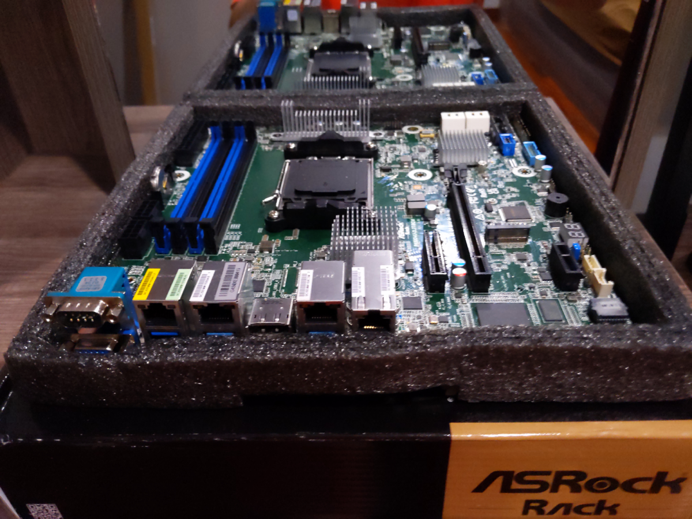

BKK04 - Bootnode/RPC

CPU
Model: AMD Ryzen 9 7950X R9 7950X CPU Processor 16-Core 32-Thread 5NM L3=64M Socket AM5
- Core Count: 16 cores
- Technology: 5NM process
- L3 Cache: 64MB
- PCI Express: 5.0
- Memory Support: DDR5
Capabilities: Designed to manage multiple tasks with ease, such as running multiple networks simultaneously, efficient blockchain sync, and low latency transactions.
CPU Cooler
- Model: COOLSERVER R64 AM5 Server CPU Cooler
- Design: 4 high-quality heatpipes, 150W TDP, double ball bearing
- Enhancement: Thermalright aluminium alloy AM5 frame
Motherboard
 Model: AsRock Rack B650D4U(LGA 1718)
- Form Factor: Micro-ATX
- Memory Support: DDR5 ECC UDIMM
- PCIe Slots: Full PCIe 5.0 support, M.2 slot, x16 slot, and x4 slot
- Storage Support: Up to 7 M.2 slots
Memory
Model: 4x Server Memory Module|MICRON|DDR5|32GB|UDIMM/ECC|4800MHz|CL 40|1.1V|MTC20C2085S1EC48BA1R
- Capacity: 4 modules of 32GB DDR5 each
- Technology: ECC for increased data integrity
- Performance: Low-latency
SSD Expansion Cards

- Model: NVMe SSD Expansion Card NVMe PCIe RAID Adapter 4 Ports NVME SSD To PCI-E 4.0 X16 Expansion Card
Storage
- Primary Storage: 6x 2TB Samsung SSD Pro 980
- Backup Storage: 3x 16TB disks in ZFS RAIDZ (32TB total)
Benchmarks
``+----------+----------------+-------------+-------------+-------------------+
| Category | Function | Score | Minimum | Result |
+===========================================================================+
| CPU | BLAKE2-256 | 1.65 GiBs | 783.27 MiBs | ✅ Pass (215.8 %) |
|----------+----------------+-------------+-------------+-------------------|
| CPU | SR25519-Verify | 832.82 KiBs | 560.67 KiBs | ✅ Pass (148.5 %) |
|----------+----------------+-------------+-------------+-------------------|
| Memory | Copy | 16.99 GiBs | 11.49 GiBs | ✅ Pass (147.9 %) |
|----------+----------------+-------------+-------------+-------------------|
| Disk | Seq Write | 2.09 GiBs | 950.00 MiBs | ✅ Pass (225.3 %) |
|----------+----------------+-------------+-------------+-------------------|
| Disk | Rnd Write | 885.35 MiBs | 420.00 MiBs | ✅ Pass (210.8 %) |
+----------+----------------+-------------+-------------+-------------------+
From 5 benchmarks in total, 5 passed and 0 failed (10% fault tolerance).
2023-08-03 00:49:00 The hardware meets the requirements
Read Latency Statistics in nanoseconds:
-------------------------
Minimum: 460 ns
Maximum: 535014 ns
Mean: 968.885148 ns
Standard Deviation: 280.737214 ns
99.99th Percentile Read Latency: 350 ns
-------------------------
Read IOPS: 906996.500117
The read latency meets the 2000 ns and lower QoS requirement
Chassis
- Model: TGC-24550 2U
- Design: 2U rackmount, efficient airflow design
Power Supply Unit
- Model: T.F.SKYWINDINTL 1U MINI Flex ATX Power Supply Unit 400W Modular PSU
- Capacity: 400W
- Features: Built-in cooling fan, overcurrent, overvoltage, and short-circuit protection
KVM
- Model: Asrock Rack BCM/IPMI for remote control
Summary
The BKK04 Bootnode leverages a combination of cutting-edge components to deliver high performance, reliability, and scalability. From the AMD Ryzen 9 7950X processor with 32 threads high core clock cycles to the efficient memory and robust storage solutions, every part of this server is designed to handle demanding server applications, particularly those related to blockchain processing. The use of advanced cooling and power supply units ensures long-term sustainability and stable operation. All components have been chosen as well to be most energy efficient solutions that market can currently provide.